传媒公司
我有自己的传媒公司。品牌、内容和活动，是我过去投入很多时间的事情，也贯穿着我的工作经历。
现在是一家 AI 初创公司的 CMO，
也有自己的传媒公司和音乐工作室。
我的工作围绕 AI、品牌和人展开。从大模型评估、产品营销，到海外创作者合作和创业，我喜欢把一个产品理解清楚，再找到它与人之间的连接。
音乐占了我生活里很大一部分。我在前卫摇滚和后摇乐团里打鼓，也一直听歌、看演出。旅行、播客、公益，以及在互联网上遇见的人，让工作之外的生活同样充实。
I'm a CMO at an AI startup, with a media company and a music studio of my own. I play drums, travel, listen, and enjoy meeting people with something to share.
英国留学经历：University of Southampton, MSc；University of Cambridge, Art。
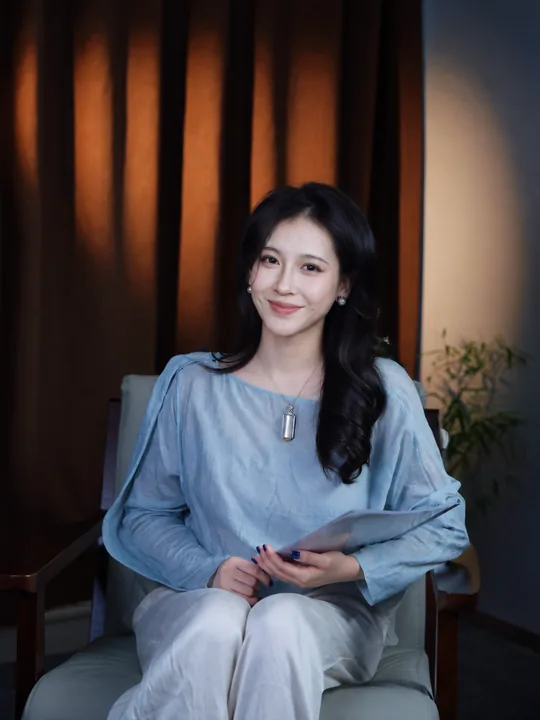
AI 是现在的工作。传媒与音乐，也有各自生长的空间。
我有自己的传媒公司。品牌、内容和活动，是我过去投入很多时间的事情，也贯穿着我的工作经历。
有自己的音乐工作室，也有一起玩音乐的乐队。听音乐、演奏、参与现场，是我一直在做的事。
联合创始人 / CMO
把 Agent 产品讲清楚，也把开发者连接起来。
负责品牌定位与市场表达，将产品机制转化为开发者、企业客户和媒体易于理解的价值。统筹内容、创作者与媒体传播，并组织黑客松和开发者活动，推进合作伙伴沟通与活动落地。
I lead brand positioning and market communication, translating product mechanics into clear value for developers, business customers and the media. My work brings together content, creator and media outreach, hackathons, developer events and partner coordination.
产品营销、海外市场与增长
从 Bot 的使用场景，走到用户能感知的价值。
提炼 Bot 的使用场景与产品卖点，参与 Explore 页面、创作者推广、社媒内容和多语言落地页建设。跟进 ASA、Meta、SEM 等渠道，并结合订阅转化、用户行为和渠道 ROI 复盘推广效果，为内容与页面优化提供依据。
I translated Bot capabilities into use cases and product messaging for Explore, creator campaigns, social content and multilingual landing pages. I worked with ASA, Meta and SEM channels, using subscription conversion, user behavior and channel ROI to inform content and landing-page improvements.
用户产品运营 · 豆包大模型 Seed 项目
从模型评估开始，理解 AI 的能力边界。
参与中文信息检索方向的大模型评估，围绕用户场景与输出质量，对齐标注及产研标准，并用可视化报告支持协作与结论交付。
I contributed to Chinese-language information-retrieval evaluation for the Doubao Seed project, aligning annotation and product-research standards and using visual reports to support collaboration and delivery.
海外创作者营销与市场推广
围绕创作者，让内容成为产品的入口。
建联与维护海外创作者，推进激励和内容合作，协同制作案例与落地页。参与全球创作者挑战赛推广，通过社媒、论坛和邮件衔接活动招募、内容产出与后续传播。
I built relationships with international creators, supported incentive and content partnerships, and collaborated on case studies and landing pages. For a global creator challenge, I worked across social media, forums and email to connect recruitment, content creation and follow-up promotion.
做产品和做活动，都让我有机会认识不同领域的人。
组织 Way to AGI 在成都的首场及多场线下活动，把对 AI 的兴趣带到面对面的交流中。
在 ClawHunt，从合作伙伴沟通、赞助权益与媒体协调，到活动推广和落地，连接开发者、企业需求与投资机构。
A LOT OF MY LIFE IS MUSIC
听过上万首歌，
看过小几百场演出。
也会坐到鼓组后面，换一个位置参与现场。音乐是兴趣，也是生活里长期投入的一部分。
Sycamore后摇乐队 / 打击乐
THERE THERE前卫摇滚乐队 / 打击乐
A listener, a drummer, and someone who keeps coming back to live music.

一些属于乐队的视觉THERE THERE / Visual archive
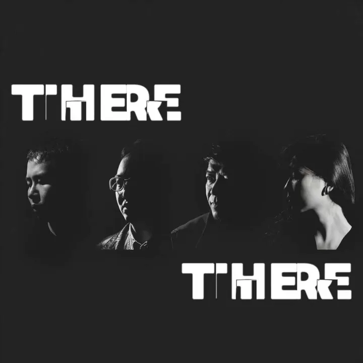
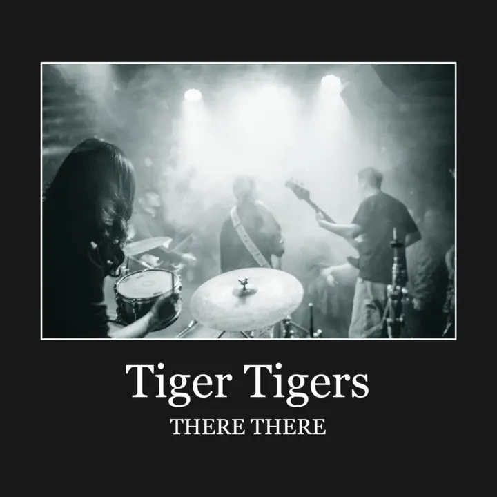
演奏之外，我也参与音乐节的策划与执行。
作为主办方及策划，将东京企划“30人30曲”引入成都。
受邀参与节目录制，获节目“黄金选手”称号。
工作以外，我的时间也花在旅行、播客和公益上。
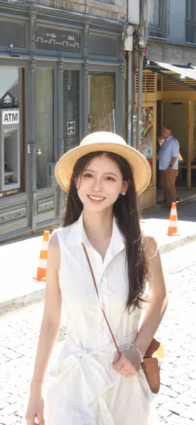
去过上百个国家和地区。旅行是我认识这个世界的一种方式，也让我有机会走进不同的日常。
听过上千小时播客。除了音乐，我也喜欢听人分享经历、想法和看待世界的方式。
做过大几百小时各类公益。这些投入，也是我生活里很重要的一部分。
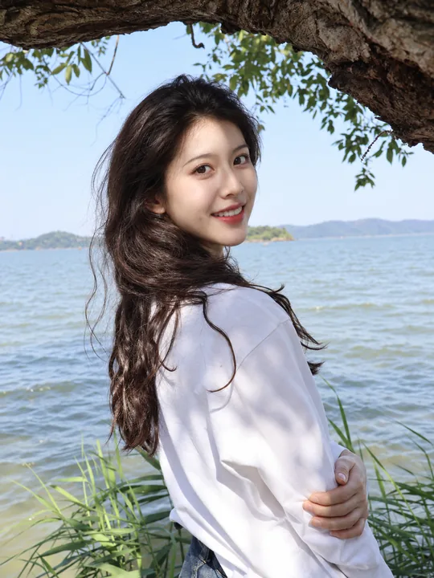
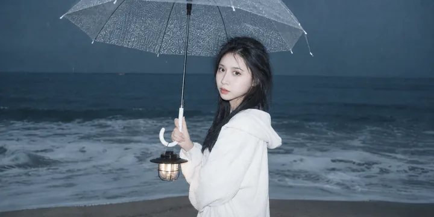
城市、日常、光线，和不同状态的自己。
这组照片及页面中的个人肖像使用了 AI 辅助换脸或编辑，作为个人视觉表达。点击可以放大看。
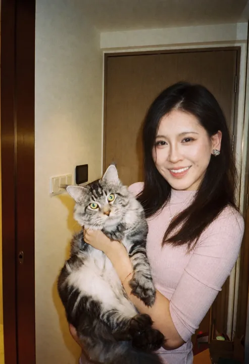
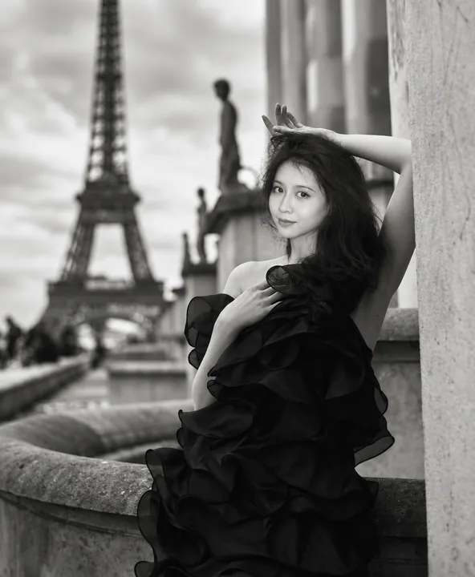
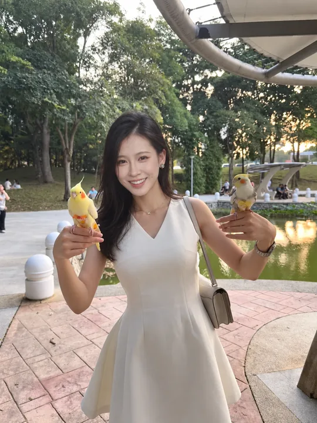
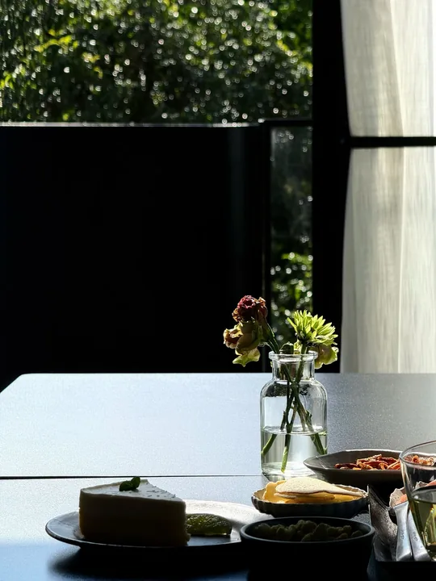
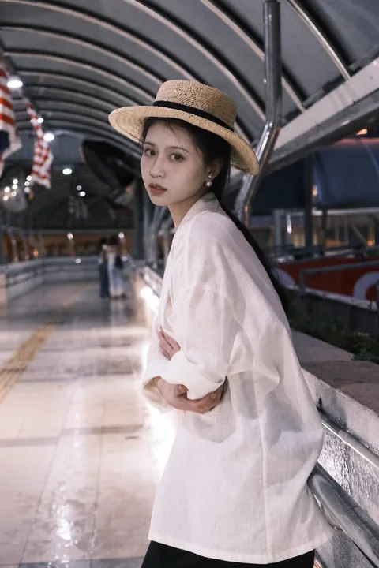
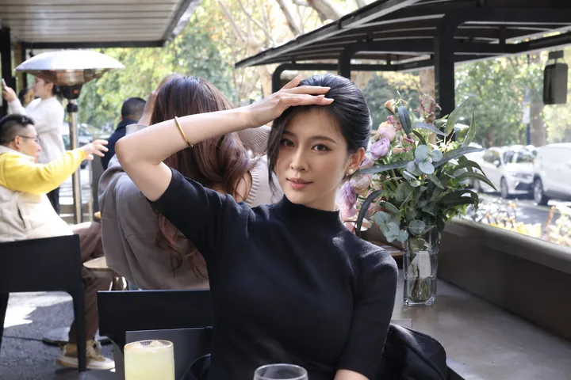
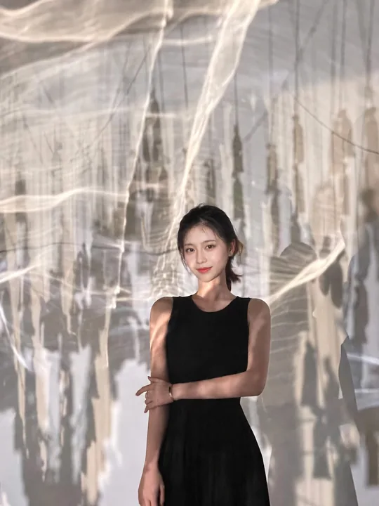
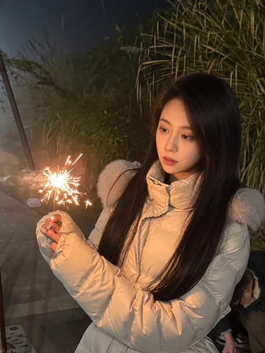
NICE TO MEET YOU
我喜欢在互联网上认识优秀、真诚的人。
可以聊 AI、聊音乐，也可以聊聊各自最近在做的事。
I enjoy meeting talented, genuine people online. Let's talk about AI, music, or whatever has been on our minds lately.